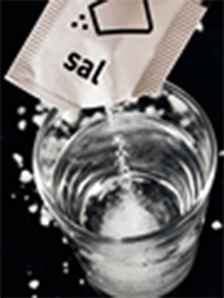
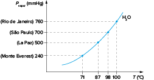
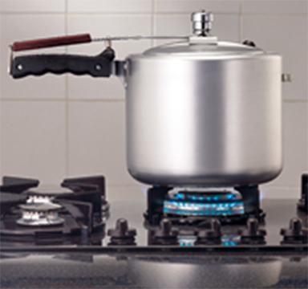

Ao nível do mar, a água ferve a 100
º
C.
Steven Coling/Shutterstock.com
Por que sai fumaça do chuveiro se a água não chega a 100
º
C?
Porque a água não precisa chegar a 100
º
C para passar para o estado gasoso. Se a água só virasse vapor a 100
º
C, nunca haveria chuva, pois rios, lagos e mares jamais entrariam em ebulição. O segredo é que, além da ebulição, a água pode passar do estado líquido para o gasoso por duas outras maneiras. A primeira é a calefação, uma mudança quase imediata de estado.
Ela ocorre quando você joga água numa chapa quente, por exemplo. A segunda é a evaporação. Para evaporar, a água precisa estar só um pouco mais quente que o ar. É aí que entra o chuveiro: ele consegue gerar essa diferença de
temperatura para fazer a água virar vapor. As gotinhas que caem a uma temperatura de pelo menos 20
º
C superior à do ambiente têm boas chances de evaporar. Só para exemplificar, num banho [...] quente, com temperatura média em torno dos 45
º
C, cerca de 10% da água se perde em forma de vapor. Em um chuveiro elétrico comum, isso significa que cerca de 1,5 litro passa para o estado gasoso durante uma ducha rápida de apenas cinco minutos.
[...]
TIÓ NETO, Fernando.
Mundo Estranho . São Paulo, ed. 40, p. 38, jun. 2005. Abril Comunicações S. A. Disponível em: <https://super.abril.com.br/mundo-estranho/por-que-sai-fumaca-do-chuveiro-se-a-agua-nao-chega-a-100-oc/>. Acesso em:
24 jun. 2020.

Sistemas dispersos
Quando analisamos um sistema disperso, temos uma substância X formada por partículas que serão distribuídas uniformemente em toda a extensão de uma substância Y. As substâncias X e Y são denominadas, respectivamente,
disperso e
dispersante .

Solução de água com sal.
Mariyana M/Shutterstock.com
Os sistemas dispersos são classificados de acordo com o tamanho das partículas que os constituem, sendo:
- • Soluções : sistemas formados por partículas (átomos, moléculas ou íons) com tamanho máximo de 1 nanômetro (nm) de diâmetro (1 nm
=
1 ∙ 10
–9 m); são misturas homogêneas. Exemplos: solução de água com sal, solução de água com álcool, ar filtrado (isento de poeira).
- • Coloides (ou dispersões coloidais) : sistemas formados por partículas com tamanho entre 1 nm e 1000 nm de diâmetro; são misturas heterogêneas, cujas fases não são diferenciáveis a olho nu, devido ao tamanho das
partículas. Exemplos: sangue (glóbulos, plaquetas e plasma), leite (gordura e água), gelatina (proteínas e água), tintas (pigmentos e solvente) e chantili (creme de leite e ar).
Composição do sangue, um coloide.
- • Suspensões : sistemas formados por partículas com tamanho superior a 1000 nm de diâmetro; são misturas heterogêneas visíveis a olho nu. Exemplos: areia e água, água turva de uma represa e água e óleo.
Estudaremos, nesta unidade, algumas propriedades físicas da água e as modificações causadas quando é adicionado um soluto não volátil, formando uma solução. Entre essas propriedades, estão a temperatura de ebulição, a temperatura de congelamento e a pressão
de vapor. Todas são classificadas como
propriedades coligativas , pois são modificadas na presença de um soluto não volátil. Elas dependem apenas do número de partículas de soluto por molécula de solvente, e não da identidade do soluto.
Lodo na água, um exemplo de suspensão. Na imagem, o lodo decantou com o repouso, pois é mais denso que a água.
LPNkriengsak/Shutterstock.com
Mudanças de estado físico e diagrama de fases da água
Ao aquecermos água em uma panela, ela entra em
ebulição a 100
º
C ao nível do mar, sob pressão de 1 atm, formando bolhas. Uma poça de água seca após um dia de sol devido à
evaporação . Após o preparo de um hambúrguer, a água da torneira muda bruscamente de temperatura ao atingir a chapa quente, mudança de estado físico conhecida como
calefação . Ebulição, evaporação e calefação são exemplos de
vaporização , transformação de uma substância do estado líquido para o estado gasoso. Quando queremos reduzir a temperatura de uma bebida, podemos acrescentar gelo, produzido a partir da
solidificação da água. Se demorarmos para utilizar o gelo, a água sofrerá
fusão , passando para o estado líquido. Se um copo com água e gelo ficar exposto à temperatura ambiente, após certo intervalo de tempo, observaremos gotículas de água em seu exterior, consequência da
condensação do vapor de água presente no ar. Observe o esquema abaixo para recordar as características da água nos três estados físicos da matéria e relembrar os nomes de todas as mudanças de estado físico da matéria:
Características da água nos três estados físicos da matéria e nomenclatura das mudanças de estado.
O estado físico da água (assim como das demais substâncias puras) depende de dois fatores: pressão e temperatura. A água é gasosa acima de 100
º
C, sólida abaixo de 0
º
C e líquida nesse intervalo, considerando uma pressão atmosférica ao nível do mar (1 atm ou 760 mmHg). Alterando a pressão atmosférica, os valores das temperaturas de fusão e ebulição também serão alterados. Assim, analisando um
diagrama de fases , podemos observar qual será o estado físico de uma substância quando submetida a determinados valores de pressão e temperatura. Veja:
Diagrama de fases da água.
Analisando o diagrama, observamos três regiões: a região cinza identifica o estado sólido; a região azul, o estado líquido; a região vermelha, o estado de vapor de água. Um ponto localizado na região azul do diagrama indica que a água estará no estado
líquido; já se o ponto estiver sobre a curva A, pode indicar a mudança do estado sólido para o estado líquido (fusão) ou do estado líquido para o sólido (solidificação). Note, ainda, no diagrama, a existência de um ponto que
indica as condições em que podem existir, simultaneamente, gelo, água líquida e vapor de água, denominado ponto triplo (T). Além disso, a linha que separa as fases líquida e gasosa não continua indefinidamente e finaliza no
chamado
ponto crítico . Nesse estado (fluido supercrítico), as propriedades da água tornam-se completamente diferentes.
Temperatura de ebulição e pressão máxima de vapor
Quando colocamos água em uma panela com tampa de vidro e a levamos ao fogo, observamos o conteúdo da panela facilmente pela tampa no início do aquecimento. Com o avanço do aquecimento, passamos a ter dificuldade em enxergar o conteúdo,
porque gotículas de água estão distribuídas na tampa. Essas gotículas tendem a aumentar até chegarem a uma quantidade máxima.
As gotículas surgem porque parte da água líquida mudou para o estado de vapor com o aquecimento, uma vez que a
temperatura de ebulição da água foi atingida. Assim, podemos dizer que:
Um líquido entra em ebulição quando
P
vapor
=
P
externa .
Um líquido entra em ebulição quando a pressão máxima de seus vapores (P
vapor ) se iguala à pressão externa (pressão atmosférica local). A pressão máxima de vapor de determinada substância é a maior pressão que seus vapores exercem em dada temperatura.
Em determinado instante, o número de moléculas que passou para o estado gasoso se iguala ao número de moléculas no estado líquido por unidade de tempo. O sistema atinge um estado de
equilíbrio dinâmico entre o líquido e seus vapores.
Quando a quantidade de vapor dissolvido no ar atmosférico confinado atinge o seu valor máximo, damos o nome de
pressão máxima de vapor à pressão parcial que é exercida por ele. Quanto maior for a pressão máxima de vapor de um líquido, mais
volátil
será o líquido, pois ele tende a evaporar facilmente.
Equilíbrio dinâmico entre o líquido e seus vapores.
Esquema de um recipiente fechado, no qual coexistem em equilíbrio os estados líquido e vapor de água.
Fatores que alteram a pressão máxima de vapor
A pressão máxima de vapor pode ser alterada pela temperatura e pela natureza do líquido. No entanto, ela
não é alterada pela quantidade de líquido . Por exemplo, em um isqueiro a gás, o nível do líquido vai diminuindo conforme o uso do isqueiro, porém a pressão se mantém constante.
Influência da temperatura
A temperatura de ebulição de uma substância é influenciada pela pressão externa. Ao nível do mar (pressão de 760 mmHg ou 1 atm, como na cidade do Rio de Janeiro), a água ferve a 100
º
C. Em locais de maior altitude, a pressão exercida pela coluna de ar é menor, sendo menor sua temperatura de ebulição. Na cidade de São Paulo – localizada a 750 metros de altitude –, a água ferve por volta de 97,7
º
C; já na cidade de La Paz (Bolívia) – localizada a 3 600 metros de altitude –, a água entra em ebulição a 87
º
C; e no Monte Everest – localizado a 8 848 metros –, ela ferve a 71
º
C.
Esquema que mostra a influência da altitude na pressão atmosférica.
Assim, ao variar a pressão externa, a temperatura de ebulição do líquido também muda. Considerando a água, o gráfico da pressão máxima de vapor em função da temperatura pode ser representado da seguinte forma:

Influência da altitude sobre à pressão de vapor e a temperatura de ebulição.
 Mais
Mais
Como Funciona: A Panela de Pressão
Oficiencia
O professor de física da UFSCar Luiz Antônio de Oliveira Nunes aborda nesse vídeo o princípio de funcionamento da panela de pressão. Ele também traz curiosidades sobre tipos de panela de pressão desde sua invenção. O vídeo mostra, ainda, uma experiência
que envolve esse utensílio.
1
UEL-PR Um estudante do Ensino Médio fez a seguinte pergunta ao professor: “É possível fazer a água entrar em ebulição em temperatura inferior à sua temperatura de ebulição normal (100
º
C)? Para responder ao aluno, o professor colocou água até a metade em um balão de fundo redondo e o aqueceu até a água entrar em ebulição. Em seguida, retirou o balão do aquecimento e o tampou com uma rolha, observando, após poucos segundos, o término
da ebulição da água. Em seguida, virou o balão de cabeça para baixo e passou gelo na superfície do balão, conforme a figura ao lado.
Após alguns segundos, a água entrou em ebulição com o auxílio do gelo. O aluno, perplexo, observou, experimentalmente, que sua pergunta tinha sido respondida.
- A partir do texto e da figura, explique o que provocou a ebulição da água com o auxílio do gelo.
- O professor, mediante o interesse do aluno, utilizou o mesmo balão para fazer outro experimento. Esperou o balão resfriar até a temperatura de 25
º
C e acrescentou uma quantidade de um sal ao balão até saturar a solução, sem corpo de fundo. A massa da solução aquosa salina foi de 200 g e, com a evaporação total da solução, obteve-se um resíduo salino no fundo do balão de 50 g.
A partir do texto, determine a solubilidade do sal em g/100 g de H
2 O, na mesma temperatura analisada.
Resolução:
- Ao retirar o balão do aquecimento e fechá-lo com a rolha, houve a interrupção da ebulição, pois a pressão interna do balão impede as moléculas de água de mudarem de estado físico. Quando o fundo do balão entra em contato
com o gelo, ocorre redução da pressão interna, devido à condensação das moléculas de água. Isso permite que as moléculas no estado líquido passem para o estado de vapor, mesmo que a temperatura seja menor que 100 °C.
- Teremos:
150 g de H
2 O 50 g de sal
100 g de H
2 O
x
x = 33,3 g
Assim, a água poderia ferver à temperatura ambiente desde que a pressão sobre ela diminua bastante.
Nas panelas de pressão, a pressão interna é superior a 1 atm, e a água ferve em temperaturas superiores a 100
º
C. Assim, os alimentos ficam cozidos mais rapidamente. Esse tipo de panela apresenta uma borracha na tampa cuja função é vedar totalmente o sistema para que ele permaneça fechado, impedindo que o vapor de água formado no aquecimento escape para o exterior.
Assim, a pressão interna da panela aumenta progressivamente até um limite no qual ela começa a empurrar a válvula com pino. Nesse instante, a pressão para de aumentar, pois o vapor formado em excesso passa a ser liberado por
essa válvula.

Javier Crespo/Shutterstock.com
A panela de pressão atinge temperaturas elevadas acima da temperatura de ebulição da água, fazendo com que o alimento seja cozido mais rapidamente.
Influência da natureza do líquido
Alguns líquidos evaporam mais rapidamente do que outros. Líquidos mais voláteis que a água evaporam mais facilmente, apresentando maior pressão de vapor e, ao considerar-se um gráfico da pressão máxima de vapor de água em função
da temperatura, localizam-se acima da curva da água. Líquidos menos voláteis localizam-se abaixo da curva da água. Em um gráfico, basta traçarmos uma reta horizontal a partir da pressão atmosférica que encontraremos a temperatura
de ebulição de uma substância.
Variação da pressão de vapor em função da temperatura para diferentes substâncias.
As forças intermoleculares são determinantes na disposição dos líquidos no gráfico. Tanto o éter etílico (T.E.
=
35
º
C) quanto o álcool etílico (T.E.
=
78
º
C) são líquidos mais voláteis que a água (T.E.
=
100
º
C). No entanto, o éter apresenta interações intermoleculares do tipo dipolo permanente, que são menos intensas do que as ligações de hidrogênio presentes no álcool etílico. Quanto mais intensa for a interação intermolecular, mais fortemente as moléculas
são atraídas umas pelas outras e menos volátil será o líquido. Observe que, no gráfico, à temperatura de 35
º
C, a água apresenta menor pressão de vapor, e o éter maior pressão de vapor.
Consolidando saberes
1
UEG-GO 2015 As propriedades físicas dos líquidos podem ser comparadas a partir de um gráfico de pressão de vapor em função da temperatura, como mostrado no gráfico hipotético a seguir para as substâncias A, B, C e D.
Segundo o gráfico, o líquido mais volátil será a substância:
- A
- B
- C
- D
Disponível em: <https://www.boredpanda.com>.
Em Xangai, uma loja especializada em café oferece uma opção diferente para adoçar a bebida. A chamada
sweet little rain consiste em uma xícara de café sobre a qual é pendurado um algodão-doce, material rico em sacarose, o que passa a impressão de existir uma nuvem pairando sobre o café, conforme ilustrado na imagem.
O café quente é então adicionado na xícara e, passado um tempo, gotículas começam a pingar sobre a bebida, simulando uma chuva doce e reconfortante. A adição de café quente inicia o processo descrito, pois
Note e adote: Temperatura de fusão da sacarose à pressão ambiente
=
186
º
C;
Solubilidade da sacarose a 20
º
C
=
1,97 kg/L de água.
- a temperatura do café é suficiente para liquefazer a sacarose do algodão-doce, fazendo com que este goteje na forma de sacarose líquida.
- o vapor de água que sai do café quente irá condensar na superfície do algodão-doce, gotejando na forma de água pura.
- a sacarose que evapora do café quente condensa na superfície do algodão-doce e goteja na forma de uma solução de sacarose em água.
- o vapor de água encontra o algodão-doce e solubiliza a sacarose, que goteja na forma de uma solução de sacarose em água.
- o vapor de água encontra o algodão-doce e vaporiza a sacarose, que goteja na forma de uma solução de sacarose em água.
3
PUC-RS 2016 Quando se compara a água do mar com a água destilada, pode-se afirmar que a primeira, em relação à segunda, tem menor __________, mas maior __________.
- densidade – ponto de ebulição
- condutividade elétrica – densidade
- pressão de vapor – condutividade elétrica
- concentração de íons – ponto de ebulição
- ponto de congelação – facilidade de vaporização do solvente
4
Fasm-SP 2017 Analise a tabela que apresenta a pressão de vapor a 100
º
C para três diferentes substâncias.

- Esboce, no gráfico abaixo, as curvas de pressão de vapor relativas aos álcoois apresentados na tabela. Qual dos dois álcoois é o mais volátil?

- Explique, de acordo com a relação entre as forças intermoleculares e os pontos de ebulição, por que o butan-2-ol apresenta maior pressão de vapor que o hexan-3-ol à mesma temperatura.
5
Unesp Entre 6 e 23 de fevereiro aconteceram os Jogos Olímpicos de Inverno de 2014. Dentre as diversas modalidades esportivas, o
curling é um jogo disputado entre duas equipes sobre uma pista de gelo, seu objetivo consiste em fazer com que uma pedra de granito em forma de disco fique o mais próximo de um alvo circular. Vassouras são utilizadas
pelas equipes para varrer a superfície do gelo na frente da pedra, de modo a influenciar tanto sua direção como sua velocidade. A intensidade da fricção e a pressão aplicada pelos atletas durante o processo de varredura
podem fazer com que a velocidade da pedra mude em até 20% devido à formação de uma película de água líquida entre a pedra e a pista. O gráfico apresenta o diagrama de fases da água.
(Tito Miragaia Peruzzo e Eduardo Leite do Canto. Química na abordagem do cotidiano, 2006. Adaptado.)
Com base nas informações constantes no texto e no gráfico, a seta que representa corretamente a transformação promovida pela varredura é a de número:
- 3.
- 2.
- 4.
- 1.
- 5.
6
Uece A panela de pressão, inventada pelo físico francês Denis Papin (1647-1712) é um extraordinário utensílio que permite o cozimento mais rápido dos alimentos, economizando combustível.
Sobre a panela de pressão e seu funcionamento, pode-se afirmar corretamente que:
- é uma aplicação prática da lei de Boyle-Mariotte.
- foi inspirada na lei de Dalton das pressões parciais.
- aumenta o ponto de ebulição da água contida nos alimentos.
- o vapor d’água represado catalisa o processo de cocção dos alimentos.
7
Fuvest-SP 2020 Em supermercados, é comum encontrar alimentos chamados de liofilizados, como frutas, legumes e carnes. Alimentos liofilizados continuam próprios para consumo após muito tempo, mesmo sem refrigeração. O
termo “liofilizado”, nesses alimentos, refere-se ao processo de congelamento e posterior desidratação por sublimação da água. Para que a sublimação da água ocorra, é necessária uma combinação de condições, como
mostra o gráfico de pressão por temperatura, em que as linhas representam transições de fases.
Apesar de ser um processo que requer, industrialmente, uso de certa tecnologia, existem evidências de que os povos pré-colombianos que viviam nas regiões mais altas dos Andes conseguiam liofilizar alimentos, possibilitando estocá-los
por mais tempo.
Assinale a alternativa que explica como ocorria o processo de liofilização natural:
- A sublimação da água ocorria devido às baixas temperaturas e à alta pressão atmosférica nas montanhas.
- Os alimentos, após congelados naturalmente nos períodos frios, eram levados para a parte mais baixa das montanhas, onde a pressão atmosférica era menor, o que possibilitava a sublimação.
- Os alimentos eram expostos ao sol para aumentar a temperatura, e a baixa pressão atmosférica local favorecia a solidificação.
- As temperaturas eram baixas o suficiente nos períodos frios para congelar os alimentos, e a baixa pressão atmosférica nas altas montanhas possibilitava a sublimação.
- Os alimentos, após congelados naturalmente, eram prensados para aumentar a pressão, de forma que a sublimação ocorresse.
8
Falbe-SP 2016 O gráfico a seguir representa a pressão de vapor de quatro solventes em função da temperatura.
Ao analisar o gráfico foram feitas as seguintes observações:
Apesar de metanol e etanol apresentarem ligações de hidrogênio entre suas moléculas, o etanol tem maior temperatura de ebulição, pois sua massa molecular é maior do que a do metanol.
É possível ferver a água a 60
º
C, caso essa substância esteja submetida uma pressão de 20 kPa.
Pode-se encontrar o dissulfeto de carbono no estado líquido a 50
º
C, caso esteja submetido a uma pressão de 120 kPa.
Pode-se afirmar que:
- somente as afirmações I e II estão corretas.
- somente as afirmações I e III estão corretas
- somente as afirmações II e III estão corretas
- todas as afirmações estão corretas.
9
UFRGS 2016 Na gastronomia, empregam-se diversos conhecimentos provindos de diferentes áreas da química. Considere os conhecimentos químicos listados no bloco superior abaixo e os processos relacionados à produção e conservação
de alimentos, listados no bloco inferior. Associe adequadamente o bloco inferior ao superior.
- Propriedades coligativas
- Coloides
- Emulsões
- Reversibilidade de reações
A sequência correta de preenchimento dos parênteses, de cima para baixo, é:
- 1, 2 e 3.
- 1, 2 e 4.
- 2, 3 e 4.
- 2, 1 e 3.
- 3, 4 e 2.